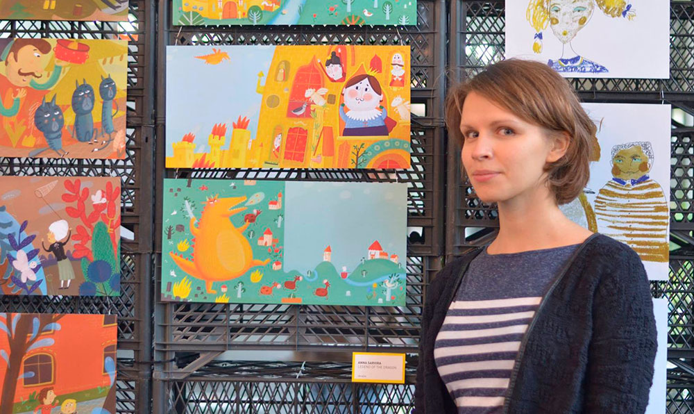

Світлана Бевза вдесяте представила колекцію на Тижні моди у Нью-Йорку.
Вона присвячена любовним листам Bevza представили колекцію сезону осінь-зима 2022 року, назва якої – Love letters.

Український дизайнер Світлана Бевза вже кілька сезонів представляє свої колекції у рамках Тижня моди у Нью-Йорку. У її колекції завжди можна знайти мінімалістичні речі, створені з використанням екологічно-етичних тканин. Так, серед аксесуарів є клатчі у вигляді конвертів та білі пальто, які чимось нагадують складений аркуш паперу. Крутим елементом у колекції стали ґудзики – вони виконані у вигляді воскового друку, а створили їх із вторинної сировини, переробленої в Україні.
ДжерелоУкраїнський бренд одягу, який любить Тіна Кароль, шиє речі в Росії. Що відомо
Раніше в одязі TTSWTRS з'являлася Мей Маск і виступали під час одного з номерів учасниці Міс Україна 2021 року
Нещодавно ми писали про неймовірну космічну сукню Тіни Кароль за 31 тис. грн , у якій була на скандальному нацвідборі на Євробачення-2022 від українського бренду TTSWTRS. З’ясувалося, що марка-гордість країни відшиває свій одяг у Росії. М'яко кажучи, вийшло негарно... Українська блогер Лєра Цимбал розмістила у своєму Instagram гнівний пост-звернення до популярного у всьому світі українського бренду TTSWTRS, який одягає не лише наших знаменитостей, а й закордонних. Дівчину обурило те, що в такий непростий для України час марка відшиває свої речі в країні-агресорі. Відповідно, платить там податки та зарплати людям, замість того, щоб робити це у себе на батьківщині.
ДжерелоУкраїнська художниця створила ілюстрації про паніку та страх війни для Нью-Йоркського музею сучасного мистецтва
Ганна Сарвіра створила картини, в яких розповіла про свої переживання, паніку та страх війни в Україні
Ми покажемо вам пронизливі до мурашок роботи української художниці, яка вилила реалії країни в ілюстраціях для нью-йоркського музею Museum of Modern Art (MOMA). Ганна Сарвіра створила картини про паніку та страх в Україні. Черга її творів просякнута болем і переживаннями про можливу повномасштабну війну з Росією. У 2017 році Ганна Сарвіра увійшла до списку 100 найкращих художників-ілюстраторів у світі. Її роботи виставлялися на багатьох закордонних експозиціях. У Міжнародному конкурсі серед ілюстраторів COW художниця посіла перше місце. Також її ілюстрації з'являлися у книгах української письменниці Галини Вдовиченко та поетеси Тетяни Щербаченко.
ДжерелоЕксподружка Каньє Веста відкрила показ Laquan Smith у Нью-Йорку на День святого Валентина
Залишитися однією на 14 лютого і не впасти у депресію? Легко! Джулія Фокс вирушила на модний показ, де вийшла на подіум як модель у дуже сексуальному образі
Перед тим, як представити свою вогняну осінню колекцію 2022 року, нью-йоркський дизайнер ЛаКуан Сміт вшанував хвилиною мовчання покійного культового редактора Vogue Андре Леона Теллі. Шум, суєта та хаос, які зазвичай панують на Тижнях моди, вгамувався на одну хвилину. Так Сміт хотів зупинити індустрію на мить, щоб дати можливість подумати. Цей крок дозволив глядачам буквально перевести дух, перш ніж на подіум вийшли моделі в ультрасексуальному одязі. Саме шоу відкрила ексдівчина Каньє Веста Джулія Фокс у темно-коричневій сукні-водолазці зі сміливими вирізами на грудях. Дизайнер розповів, що під час пандемії продаж боді та сексуальних комбінезонів його бренду зріс на 87%. Він задумався: "Куди йдуть ці жінки?" Все це він вирішив реалізувати у своїй новій колекції – свобода, сексуальність та модна непристойність оголювати своє тіло.
ДжерелоБелла Хадід поборола депресію та відкрила Тиждень моди у Нью-Йорку. Дивіться показ Proenza Schouler осінь 2022
Старт місяця моди розпочався з мінімалістичної колекції дизайнерів Лазаро Ернандеса та Джека Макколлоу

Сьогодні вночі бренд Proenza Schouler відкрив Тиждень моди у Нью-Йорку сезону осінь 2022 року. Шоу пройшло у головному виставковому просторі Фонду Бранта.
Джерело